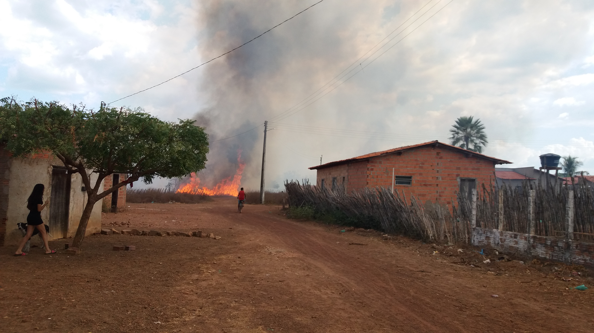

INCÊNDIO EM MORRO DO CHAPÉU DO PIAUÍ
Inicio no incêndio em Morro do Chapéu do Piauí. Foto tirada por volta das 14hO povo da cidade de Morro do Chapéu do Piauí foi surpreendido com chamas nesta Segunda-feira (12/10). A queimada iniciou por volta das 14h, ou pelo menos, foi quando foi primeiro avistado pelos moradores do Bairro São Francisco.
O fogo se espalhou de forma rápida, preocupando os moradores desta área, que rapidamente se prontificaram em tentar apagar o incêndio com seus próprios baldes.
Segundo presentes, as chamas invadiram o quintal do agente de saúde do bairro (conhecido popularmente como Novo). "O fogo entrou no cercado e queimou a casa das galinhas, matando todas elas e os pintinhos queimados", disse uma moradora.
Ainda outra moradora disse: "Agora eu sei como o pessoal da Amazônia se sentem quando pega fogo lá". Certamente essas palavras repassam o desespero sentido em meio a tragédia.
Boatos dizem que o fogo foi provocado por foguetes. Não se sabe ao certo ainda quem é o responsável por tal obra em uma área de risco. Mas o que os moradores esperam é que o mesmo pague o prejuízo e o desespero causado.

Felizmente, para fim do desespero, foi-se providenciado um carro pipa para ajudar a apagar o incêndio. Embora tenha sido demorado a tomada de tal iniciativa, não foi tarde demais. E assim os moradores ficaram foram tranquilizados.